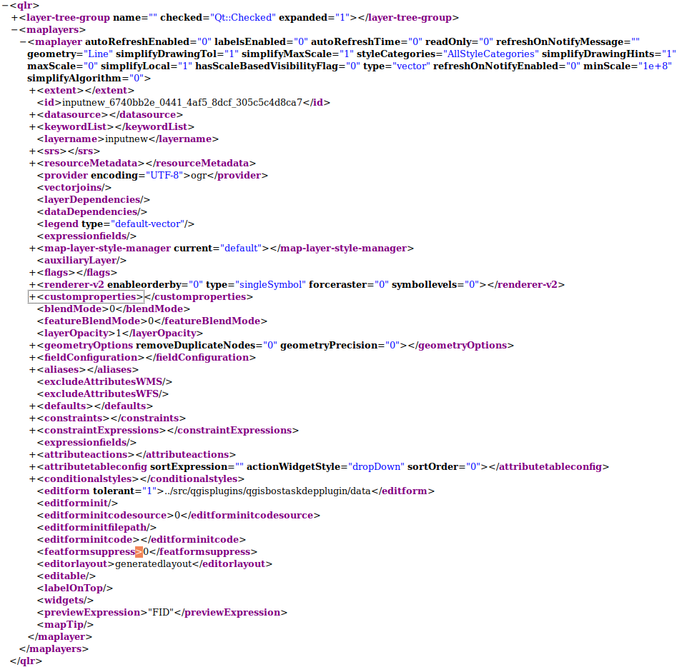

7.1. Appendix C: QGIS ファイル形式
7.1.1. QLR - The QGIS Layer Definition file
QLR ファイルは、レイヤ定義ファイルです。
QLR は、いまのところ jpData では使用していません。

図 7.1 The top level tags of a QLR file
7.1.2. QML - The QGIS Style File Format
QML は、レイヤのスタイル情報を保存する XML ファイルです。
jpData では、 地図を追加 後に、QML ファイルを適用して以下のようなものを適用しています。
シンボル
ラベル
エイリアス
シンボル: 地物の見た目を設定します。 点データが円の場合であれば、円の大きさ、内側の色、枠線の太さや色です。 下の例では、10 行目から 58 行目です。
ラベル: 属性データを地図上に表示します。
国勢調査の地域名などによく使われます。
下の例では、2 行目で labelsEnabled="0" となっており、ラベルは使用されていません。
エイリアス: GIS データのフィールド名は N02_001 のようにコード化されており、そのままでは意味がわからないことが多いです。
フィールド名につける別名をエイリアスといい、データを修正することなしに QGIS 上ではエイリアスが表示されます。
下の例では、74 行目から 82 行目です。
基本的に、QML ファイルは QGIS からエクスポートするので、直接開くことはあまりありません。 しかし、エイリアスなどはテキストエディタで編集するほうが楽なこともあります。
鉄道の駅データの QML ファイルを示します。
1<!DOCTYPE qgis PUBLIC 'http://mrcc.com/qgis.dtd' 'SYSTEM'>
2<qgis minScale="100000000" maxScale="0" labelsEnabled="0" version="3.28.7-Firenze" hasScaleBasedVisibilityFlag="0" simplifyAlgorithm="0" simplifyDrawingTol="1" simplifyMaxScale="1" simplifyLocal="1" readOnly="0" styleCategories="LayerConfiguration|Symbology|Labeling|Fields|Rendering" simplifyDrawingHints="1" symbologyReferenceScale="-1">
3<flags>
4 <Identifiable>1</Identifiable>
5 <Removable>1</Removable>
6 <Searchable>1</Searchable>
7 <Private>0</Private>
8</flags>
9<renderer-v2 type="singleSymbol" symbollevels="0" enableorderby="0" forceraster="0" referencescale="-1">
10 <symbols>
11 <symbol force_rhr="0" type="line" alpha="1" is_animated="0" frame_rate="10" name="0" clip_to_extent="1">
12 <data_defined_properties>
13 <Option type="Map">
14 <Option type="QString" value="" name="name"/>
15 <Option name="properties"/>
16 <Option type="QString" value="collection" name="type"/>
17 </Option>
18 </data_defined_properties>
19 <layer pass="0" enabled="1" class="SimpleLine" locked="0">
20 <Option type="Map">
21 <Option type="QString" value="0" name="align_dash_pattern"/>
22 <Option type="QString" value="square" name="capstyle"/>
23 <Option type="QString" value="5;2" name="customdash"/>
24 <Option type="QString" value="3x:0,0,0,0,0,0" name="customdash_map_unit_scale"/>
25 <Option type="QString" value="MM" name="customdash_unit"/>
26 <Option type="QString" value="0" name="dash_pattern_offset"/>
27 <Option type="QString" value="3x:0,0,0,0,0,0" name="dash_pattern_offset_map_unit_scale"/>
28 <Option type="QString" value="MM" name="dash_pattern_offset_unit"/>
29 <Option type="QString" value="0" name="draw_inside_polygon"/>
30 <Option type="QString" value="bevel" name="joinstyle"/>
31 <Option type="QString" value="179,179,179,255" name="line_color"/>
32 <Option type="QString" value="solid" name="line_style"/>
33 <Option type="QString" value="3" name="line_width"/>
34 <Option type="QString" value="MM" name="line_width_unit"/>
35 <Option type="QString" value="0" name="offset"/>
36 <Option type="QString" value="3x:0,0,0,0,0,0" name="offset_map_unit_scale"/>
37 <Option type="QString" value="MM" name="offset_unit"/>
38 <Option type="QString" value="0" name="ring_filter"/>
39 <Option type="QString" value="0" name="trim_distance_end"/>
40 <Option type="QString" value="3x:0,0,0,0,0,0" name="trim_distance_end_map_unit_scale"/>
41 <Option type="QString" value="MM" name="trim_distance_end_unit"/>
42 <Option type="QString" value="0" name="trim_distance_start"/>
43 <Option type="QString" value="3x:0,0,0,0,0,0" name="trim_distance_start_map_unit_scale"/>
44 <Option type="QString" value="MM" name="trim_distance_start_unit"/>
45 <Option type="QString" value="0" name="tweak_dash_pattern_on_corners"/>
46 <Option type="QString" value="0" name="use_custom_dash"/>
47 <Option type="QString" value="3x:0,0,0,0,0,0" name="width_map_unit_scale"/>
48 </Option>
49 <data_defined_properties>
50 <Option type="Map">
51 <Option type="QString" value="" name="name"/>
52 <Option name="properties"/>
53 <Option type="QString" value="collection" name="type"/>
54 </Option>
55 </data_defined_properties>
56 </layer>
57 </symbol>
58 </symbols>
59 <rotation/>
60 <sizescale/>
61</renderer-v2>
62<blendMode>0</blendMode>
63<featureBlendMode>0</featureBlendMode>
64<layerOpacity>1</layerOpacity>
65<fieldConfiguration>
66 <field configurationFlags="None" name="N02_001"/>
67 <field configurationFlags="None" name="N02_002"/>
68 <field configurationFlags="None" name="N02_003"/>
69 <field configurationFlags="None" name="N02_004"/>
70 <field configurationFlags="None" name="N02_005"/>
71 <field configurationFlags="None" name="N02_005c"/>
72 <field configurationFlags="None" name="N02_005g"/>
73</fieldConfiguration>
74<aliases>
75 <alias index="0" field="N02_001" name="鉄道区分"/>
76 <alias index="1" field="N02_002" name="事業者種別"/>
77 <alias index="2" field="N02_003" name="路線名"/>
78 <alias index="3" field="N02_004" name="運営会社"/>
79 <alias index="4" field="N02_005" name="駅名"/>
80 <alias index="5" field="N02_005c" name="駅コード"/>
81 <alias index="6" field="N02_005g" name="グループコード"/>
82</aliases>
83<defaults>
84 <default applyOnUpdate="0" expression="" field="N02_001"/>
85 <default applyOnUpdate="0" expression="" field="N02_002"/>
86 <default applyOnUpdate="0" expression="" field="N02_003"/>
87 <default applyOnUpdate="0" expression="" field="N02_004"/>
88 <default applyOnUpdate="0" expression="" field="N02_005"/>
89 <default applyOnUpdate="0" expression="" field="N02_005c"/>
90 <default applyOnUpdate="0" expression="" field="N02_005g"/>
91</defaults>
92<constraints>
93 <constraint notnull_strength="0" constraints="0" exp_strength="0" field="N02_001" unique_strength="0"/>
94 <constraint notnull_strength="0" constraints="0" exp_strength="0" field="N02_002" unique_strength="0"/>
95 <constraint notnull_strength="0" constraints="0" exp_strength="0" field="N02_003" unique_strength="0"/>
96 <constraint notnull_strength="0" constraints="0" exp_strength="0" field="N02_004" unique_strength="0"/>
97 <constraint notnull_strength="0" constraints="0" exp_strength="0" field="N02_005" unique_strength="0"/>
98 <constraint notnull_strength="0" constraints="0" exp_strength="0" field="N02_005c" unique_strength="0"/>
99 <constraint notnull_strength="0" constraints="0" exp_strength="0" field="N02_005g" unique_strength="0"/>
100</constraints>
101<constraintExpressions>
102 <constraint exp="" desc="" field="N02_001"/>
103 <constraint exp="" desc="" field="N02_002"/>
104 <constraint exp="" desc="" field="N02_003"/>
105 <constraint exp="" desc="" field="N02_004"/>
106 <constraint exp="" desc="" field="N02_005"/>
107 <constraint exp="" desc="" field="N02_005c"/>
108 <constraint exp="" desc="" field="N02_005g"/>
109</constraintExpressions>
110<expressionfields/>
111<previewExpression>"N02_001"</previewExpression>
112<layerGeometryType>1</layerGeometryType>
113</qgis>